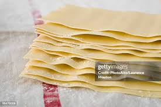

Lasagna

Description
Homemade lasagna noodles are easier to make than you think and you don't even need a pasta machine. And forget about blanching the sheets before baking — no precooking is required!
Ingredients
- 2 ¼ cups Italian-style tipo 00 flour, plus additional for dusting
- 3 large eggs
- 1 pinch salt
- 1 tablespoon water as needed
How to Make Homemade Lasagna Noodles Step-By-Step
- Gather all ingredients.
- Place flour on a marble or wooden work surface. Make a well in the center and crack in eggs; add salt.
- Gently beat eggs using a fork, incorporating surrounding flour, until mixture is runny. Bring remaining flour into the mixture using a bench scraper until dough forms a ball. Mix in water, 1 tablespoon at a time, if dough feels too stiff.
- Knead dough with your hands by flattening, stretching it, and folding the top towards the center. Turn 45 degrees and repeat until dough is soft and smooth, about 10 minutes.
- Shape dough into a ball. Place in a bowl and cover with plastic wrap. Refrigerate until firm, 30 minutes to 1 hour.
- Divide dough into 3 equal portions. Take one piece and flatten it a bit with your hands. Dust a work surface with flour and roll dough out using a rolling pin 5 to 6 times. Turn dough 45 degrees and roll out again, 5 to 6 times. Keep rolling and turning in the same way until dough is evenly very thin. When you hold up the dough, you should be able to see your fingers through it.
- Cut pasta dough into rectangular sheets to fit your baking dish using a pastry wheel or a knife. Transfer lasagna sheets to a floured kitchen towel and let air-dry for about 30 minutes before assembling.